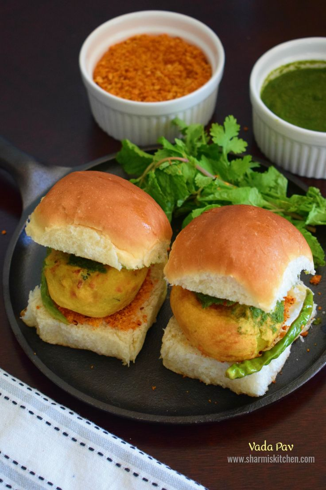

🍔 Vada Pav

Description:
Vada Pav is Mumbai's favorite street food – a spicy potato fritter sandwiched in a pav (bun),
served with chutneys and fried chilies.
Prep Time:
⏱️ 30 minutes
Ingredients:
- 4 pav buns
- 2 large potatoes (boiled and mashed)
- 1/2 tsp mustard seeds
- 1/2 tsp turmeric powder
- 1 tsp ginger-garlic paste
- 1 green chili (chopped)
- Few curry leaves
- 1 cup besan (gram flour)
- Salt to taste
- Oil for deep frying
- Dry garlic chutney and green chutney
Instructions:
-
Prepare a tempering with mustard seeds, turmeric, ginger-garlic paste, green chili,
and curry leaves. Add to mashed potatoes. Mix well and shape into balls.
-
Make a batter with besan, salt, and water. Dip each potato ball in the batter and
deep fry until golden.
- Slit the pav buns, apply chutneys, and insert the vada in between.
- Serve hot with fried green chilies and chutney.